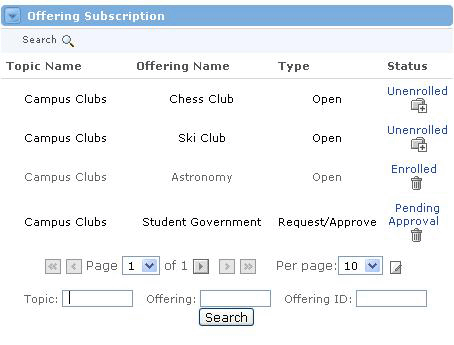
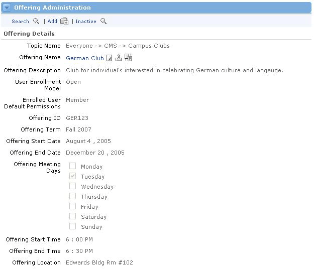

Offering States
There are two types of Offerings, active and inactive. When an Offering is created, it is considered Active. When an Active Offering is deleted, its status becomes Inactive. Most people cannot view Inactive Offerings. This is a tidy way of storing unused Offerings for future use, without them cluttering up the Active Offerings list. This feature also allows sponsors to continue to have access to an offering after the conclusion of a term, while removing the offering from the students' or members' view.
View Active Offerings To view Active Offerings a user has two options. Users with proper privileges can view all offerings by searching within the Offering Administration channel. The Offering Subscription channel also allows users to view offerings with Open and Request/Approve enrollment types. To view offerings within the Offering Subscription channel, follow these steps:
|

Adding a New Offering
To add a new Offering, complete these steps:
- Click the Add icon at the top of the Offering Administration channel.
- You should now see the Add Offering screen.
- Choose a Topic.
- Enter an Offering Name and a short Description in the text fields.
- Select a User Enrollment Model based upon the way users can be enrolled. Open Enrollment is open for any users to enroll. Request/Approve enrollment requires the user to get approval from the Offering Sponsor before they will be enrolled. In the Facilitator model, users can only be enrolled by the Offering Sponsor or a system administrator; they don't have the means to request enrollment. An enrollment model of SIS is used for integrations with third party Student Administration Systems.
- Select an Enrolled User Default Type from the drop-down list.
- Enter any additional details about the offering such as Offering ID, Term, Start Date, End Date, Meeting Days, Meeting Times, and Location.
- When you are satisfied with all settings for this offering, click the Submit button.
- You will now be able to search for and view your new offering in the Offering Administration channel.
Viewing Details of an Offering To view the details of the Offering you just added, or for any Active Offering, follow these steps:
 |